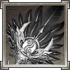

Hấp tinh: đánh thường hút 1 linh lực
Cẩm nang diệu kế: mọi tướng không mất linh lực khi dùng chiêu
Tuy nhiên để sức mạnh Ngọa Long được cụ thể thì mình nghĩ ít nhất phải lên Hoàng, khi đó Lượng hoàn toàn có thể gánh dame AOE cho team với
Kỳ môn độn giáp: 190% công và hút tối đa tới 5 linh lực, chiêu này hoàn toàn có thể tạo ra các màn lật kèo trênh lệch
lực chiến. Cuối cùng thì năng lực kiểm soát linh lực của Lượng hoàn hảo khi kích hoạt được thần khí  Bạch vũ phiến
tăng 1 linh lực mỗi lần hành động (mình nghĩ đây là nội tại ngon nhất trong các thần khí).
Kết luận: mình nghĩ đây là tướng thích hợp với đa số chiến thuật hay đội hình trong game, hiện tại cũng có rất nhiều top server đang xử dụng
các bạn may mắn roll ra có thể yên tâm chơi từ đầu game đến late game. Đây là suy nghĩ của mình về vị tướng yêu thích Gia Cát Lượng hi vọng được
anh em ủng hộ bài viết.